Existing 64-env capture; seed 42; policy 50 Hz; physics/PD 1200 Hz; rear I 200 Hz. All 64 episodes reached 30 s.
Rear scaled action is velocity (rad/s). Applied actuator torque is not net joint effort after passive losses.
Report and sampling limits · All 64 demand pages · All 64 observation pages
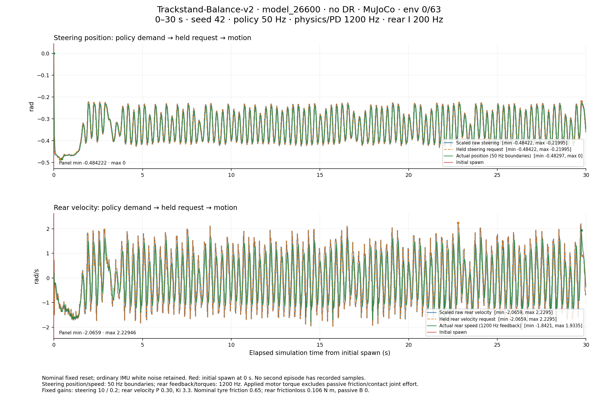
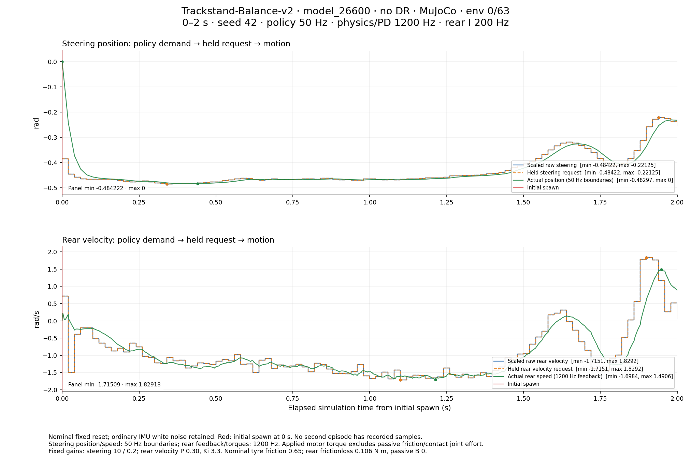
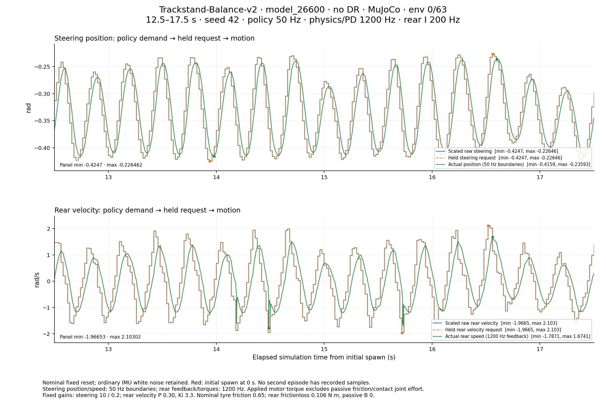
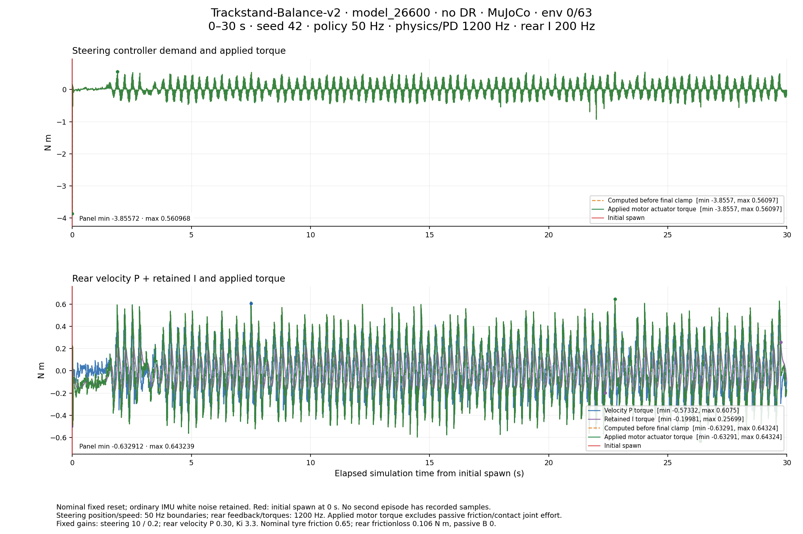
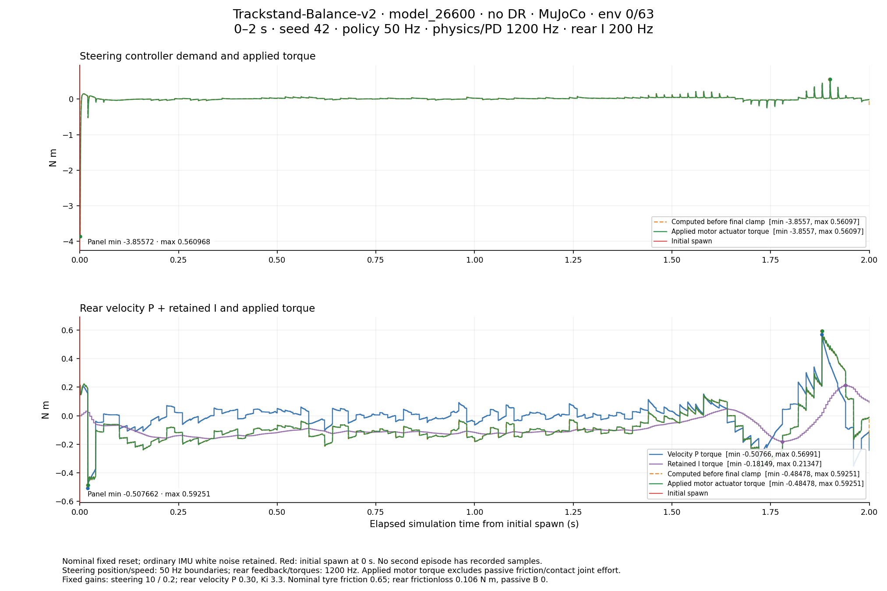
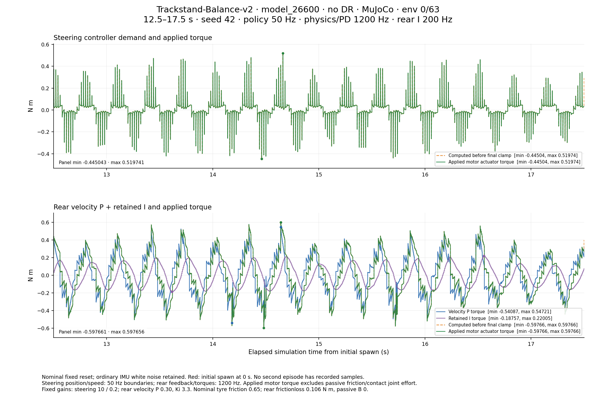
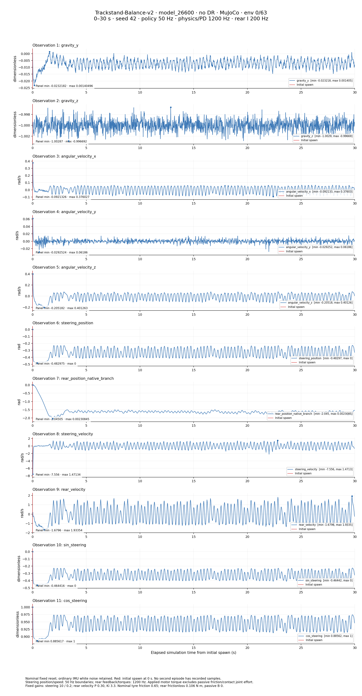
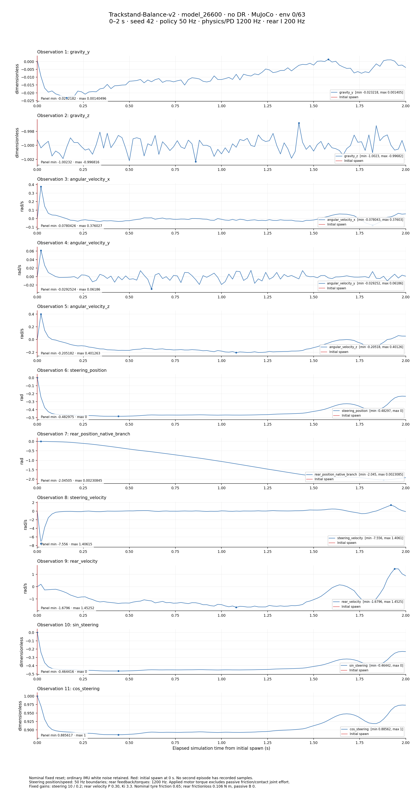
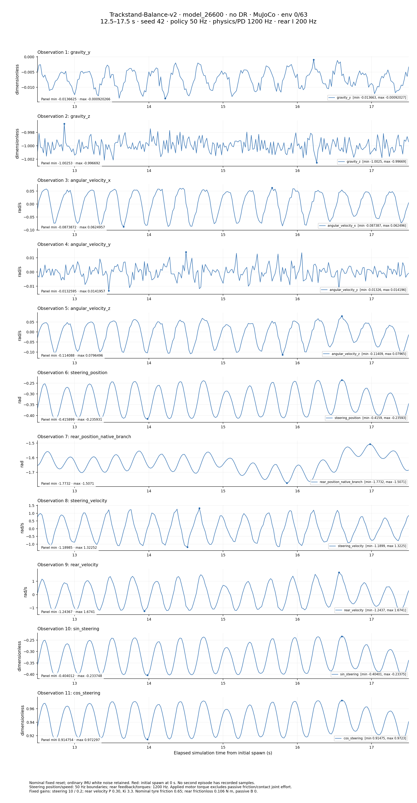
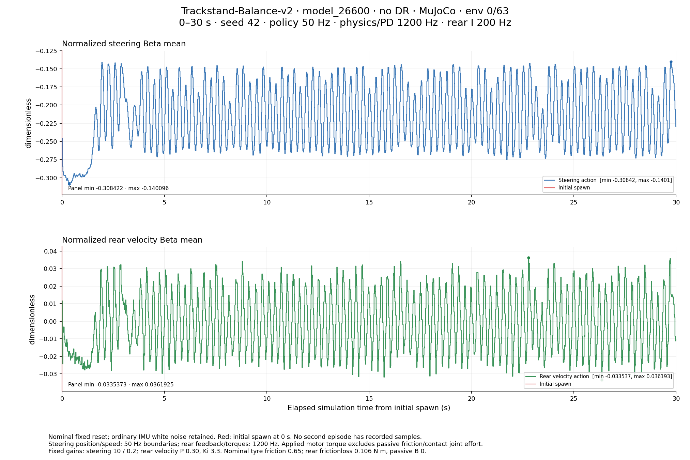
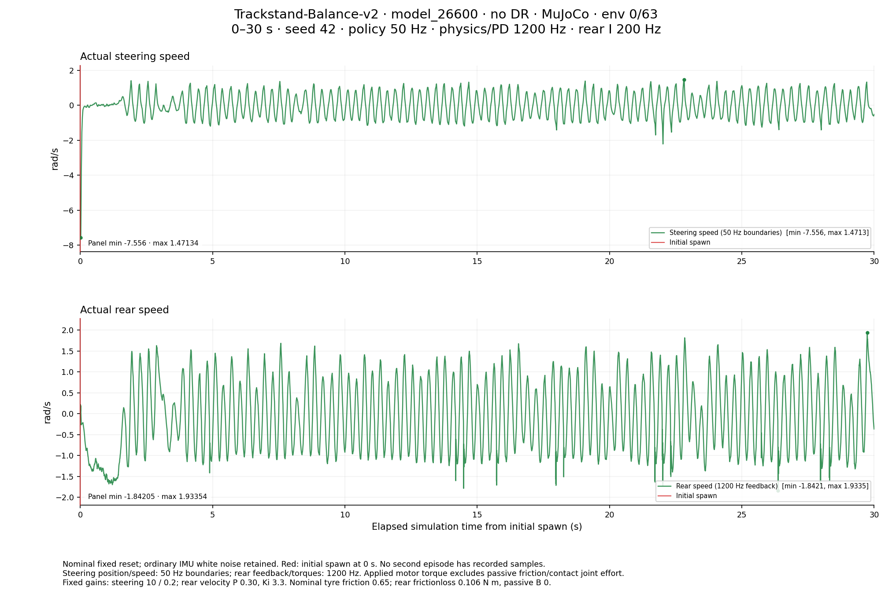
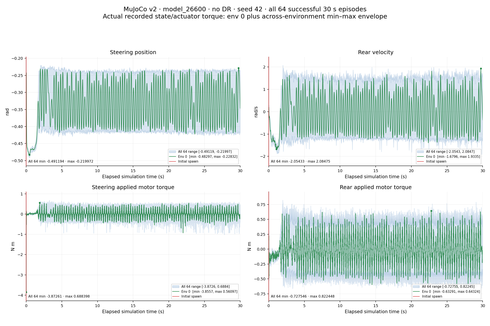